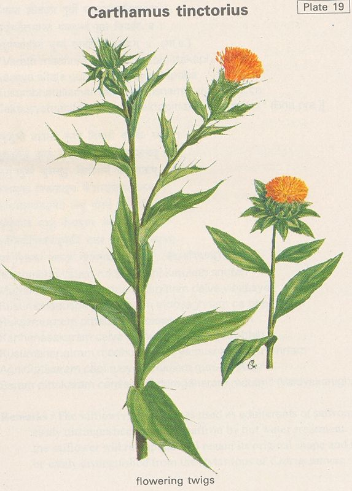

|
ECONOMICALLY
IMPORTANT PLANTS OF INDIA |
| Under-utilized Food and Fodder species and their wild relatives | Contributed by Ms.M.L Annapurna And Dr. Dhanapal, UAS, Bangalore |
Carthamus tinctorius
Taxonomic
Details

----- Correct Name
----- Classification
----- Synonyms
----- Common Names
Other Biological Details
----- Habit and Habitat
----- Diagnostic Features
----- Reproductive Biology
---------- Breeding System
---------- Phenology
---------- Pollinators
---------- Seed Biology
----------Seed Germination
------ Cultivation
----- Major Pests and Diseases
Economic Potential and Uses
----- Parts Used
----- Uses
----- Harvesting Practices
----- Produce and Products
----- Chemistry
----- Processing Techniques
----- Other uses
----- Economic Potential to the
Country
----- Export Potential
Miscellaneous Information
Literature
Correct
Name :
Carthamus tinctorius Linn.
Family : Compositae
Synonyms :
Common Names :
HABIT
& HABITAT:
An annual herb presenting a
thistle like appearence; plants may be glaborus or pubescent. It is grown in
India, Egypt, Iran, Turkey, Russia and China.
Availability :
Status :
DIAGNOSTIC
FEATURES
Leaves alternate, rigid, entire and unarmed or spinulose-serrate; heads
homogamous, outer involucral bracts ovate-oblong, constricted above the base,
green spinous or not; inner involucral bracts oblong-acute; florets tubular,
varying from light yellow to orange yellow or red in colorur, hermaphrodite,
some times a few of the marginal florets being sterile; bracts and bracteoles of
each floret modified into thin soft hairs; calyx absent; corolla long, tubular,
arising on the inferior ovary; stamens five epipetalous, synegnesious; ovary
inferior, bicarpellary, single celled, single ovuled, basal or ascending in
placentation; achenes 1/4 of an inch, smooth, obovate, truncate at top; seeds
exendospermous.
REPRODUCTIVE
BIOLOGY
Florets tubular, varying
from light yellow to orange yellow or red in colorur, hermaphrodite, some times
a few of the marginal florets being sterile; bracts and bracteoles of each
floret modified into thin soft hairs; calyx absent; corolla long, tubular,
arising on the inferior ovary; stamens five epipetalous, synegnesious; ovary
inferior, bicarpellary, single celled, single ovuled, basal or ascending in
placentation.
Breeding
System :
Both self and cross pollination takes place in nature. Since natural crossing is
very high, as high as about 15-16%. It is a serious problem in safflower to
maintain purity of types. For breeding purposes selfing can be effected by
bagging the whole plant or part of the plant.
Phenology :
Pollinators:
Seed Biology :
Seed Germination:
Cultivation:
MAJOR
PESTS & DISEASES
Pests:
Diseases:
Parts
used
Seeds
·
It
is an important oil seed crop.
·
The
oil is edible but is best used in industries particularly in the manufacture of
paints and varnishes. The value and uses are almost the same as of linseed oil.
·
The
oil cake when prepared after thorough decartication is one of the most valuable
cattle feed and also a good manure. The oil is used to a great extent to
adultrate ghee.
Harvesting
Practices
Produce and Products
Chemistry
The oil is said to be an excellent
source of unsaturated fattyacid. Its oil content is 32% of which baout 72% is
linoleic acid, th efactor which reduces blood cholesterol.
1.
In India it is cultivated both for its oil and dye called carthamin.
Dye is extracted from florets,
2.
Medicinal
uses:
In recent years it has been found that safflower oil is best for use by patients
suffering from heart and artery diseases. This oil is said to be an excellent
source of unsaturated fattyacid. Its oil content is 32% of which baout 72% is
linoleic acid, th efactor which reduces blood cholesterol.
1.
The wealth of India, A Dictionary of Indian Raw Materials and Industrial
Products, Vol. II. C, Publications and Information Directorate, CSIR, New Delhi,
India, 1950.